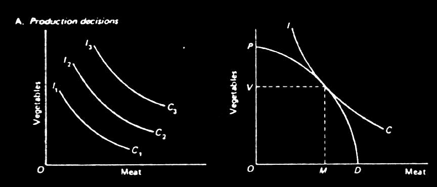

THE MICRO-ANALYSIS
Our initial graphical analysis portrays two commodities ( for simplicity), meat along the horizontal axis and vegetables along the verticle. In the case of the pure subsistence producer/consumer, we may posit an indifference schedule, IC, by revealed preference, representing all the various combinations of meat and vegetables with which the consumer is indifferent (i.e. derives the same level of utility). The shape of each indifference curve shows the assumption of diminishing marginal utility-- the slope at any point along the curve is the ratio between each commodity's marginal utility. As we approach either extreme, more of one commodity held in abundance will be forgone to attain the scarce commodity. The IC curves are numbered 1,2,3 in relation to level of utility-- utility is increased as we move up and to the right. We also draw a production frontier, PD, which shows the maximum level of meat and vegetables combinations attainable to the producer. The slope of the PD curve is the ratio of the marginal cost of each commodity. Cost may be expressed here in labor units expended. Hence, as we move down and to the left along the PD curve, less labor is expended in the production of vegetables, more in meat. The point of tangency between the PD and IC curves represents the optimum solution: where the ratio between marginal utilities equals the ratio of marginal costs. This point of tangency represents the highest indifference curve attainable-- hence the highest level of utility.
In the peasant case we would include a complex matrix of social and economic variables into the decision process. We would expect the utility curve to be drawn in such a way as to maximize family welfare. We would also expect that most factors of production are not defined by costs, yet the goods produced may have a priced assigned to them in limited markets. Hence, we draw into our subsistence model additional lines representing ratios of market prices which may alter our subsistence solution. The decrease in the utility dimension for the two commodities (meat and vegetables) would be supplemented by the utility gained in the monetary compensation.
These variations in the result have been confirmed by Chayanov: "Apart from the technical conditions of production, raising labor productivity on the peasant farm and the resulting consequences such as raising the consumption level and the ability to form capital, depend on one general economic category alone-- market prices" (Chayanov, 1966). The peasant family is therefore distinct in its economic activity in that it operates for both subsistence and exchange.
Unlike the commercial firm which operates solely on the basis of market prices, the level of economic activity on the peasant farm is not determined by output prices and factor costs, but rather "by family size and the equilibrium achieved between its demand satisfaction and the drudgery of labor" (Ibid). The typical production firm's supply curve is shown at right. The horizontal price line assumes a competitive situation in which the price remains constant at all levels of output, q. The price of the output is given by the totality of the market: where the capacity to produce equals the capacity to consume. The firm will produce at the level of q which maximizes profit-- where marginal cost intersects (is equal to) marginal revenue (i.e., price)
For the peasant family, costs and income are not so definite. Much of the product is consumed directly, and the labor input, at least, is free (as defined by opportunity costs, which are often negligible). The peasant will produce to the point where his marginal utility of income (the value he places on the next additional level of produce) equals his marginal disutility of labor (the dis-value he places on his next additional level of effort). This schema was also introduced by Chayanov. In the graph to the right, MU represents marginal utility, MD, marginal disutility of labor, q* , the resultant quantity produced, and V*, the derived subjective value level of q*.
The level of output shown above corresponds to the subsistence graph presented earlier. The difference is from comparing composite commodities above as opposed to a comparison between two commodities earlier. In either case, marginal value is equated with marginal costs. The Chayanov model introduces a,subjective factor.into marginal costs, however. Here, the costs are represented in terms of disutility, rather than in labor-time. The assumption in the previous model was that labor had the same disutility between two uses, and the choice was derived between which use to direct it.